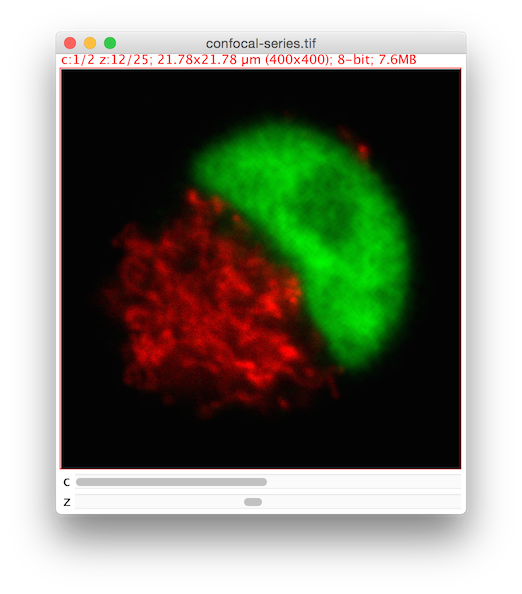
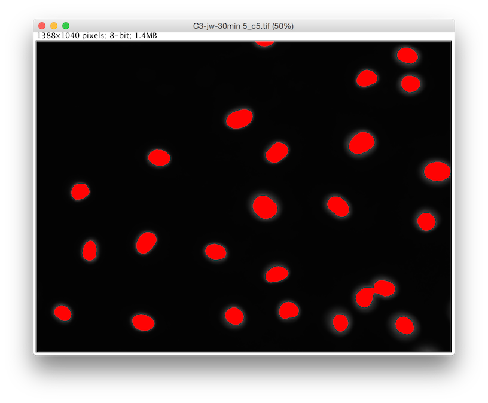
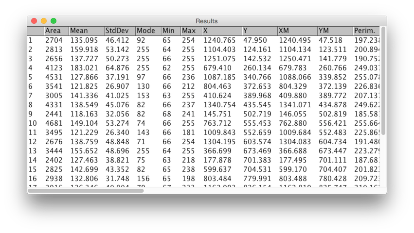

Segmentation with Fiji


What is segmentation?
Partitioning a digital image into multiple segments!


Segmentation
Three common assumptions/requirements:
1. Do you have overlapping objects? And do you care?
2. What are the shapes of your objects?
Tubes? Blobs? Clouds?
3. What modality was used? And how does the signal look?
Machine learning

How to segment?
1. Preprocess
Prepare your image for thresholding
➙
2. Threshold
Separate foreground from background
➙ 
3. Cleanup
Improve mask with morphological operations
➙
4. Identify
Split foreground into objects
➙
5. Analyze
Measure the original data
➙ 
Other techniques:
- active contours (mostly interactive)
- graph-based methods
- machine learning
Real World Examples


Further Reading
- Help from the community—ImageJ forum!
- Segmentation page of the ImageJ wiki:
- Slides from an excellent Segmentation presentation:
- Additional workshops and presentations: